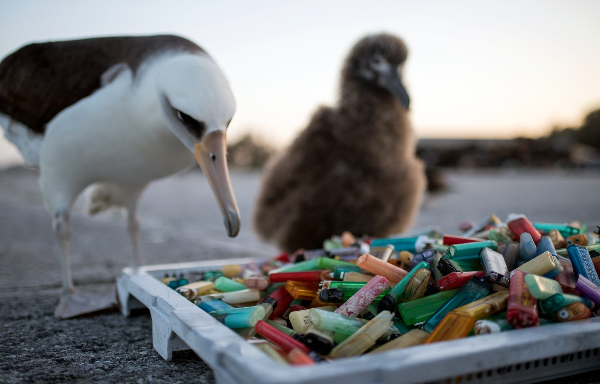
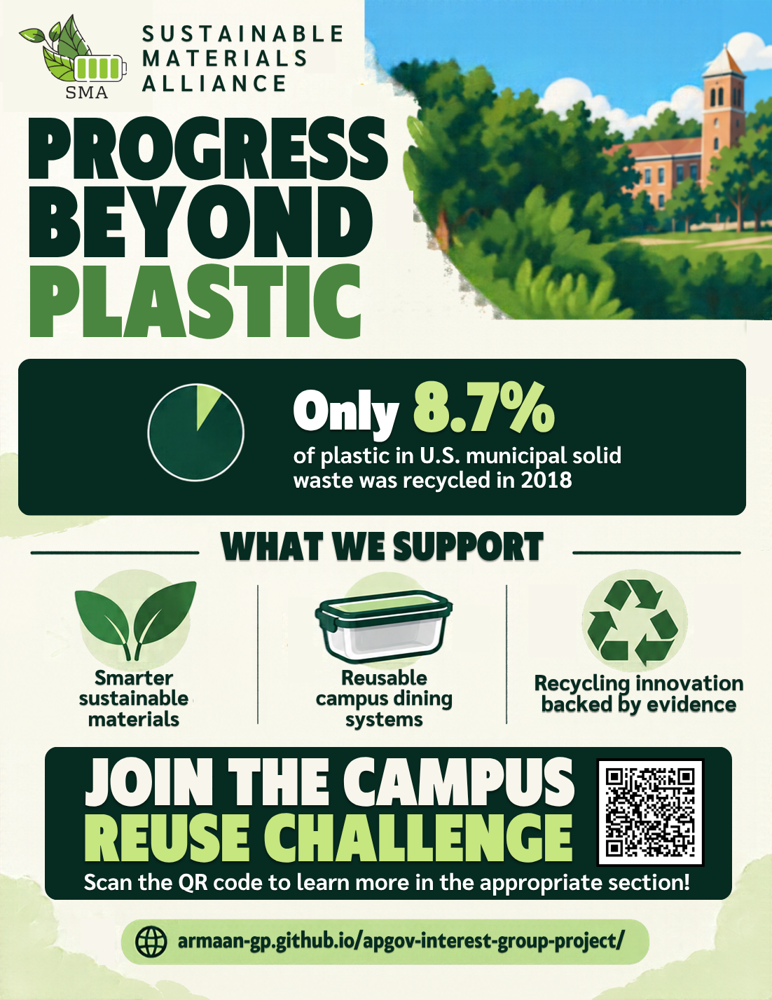

Sustainable Materials Alliance
Progress Beyond Plastic
We're a public-interest environmental group. We want public funding for better packaging, reuse systems, and recycling technology, but only for projects that can show they work.

Who we are
A public-interest group with a technology focus
Less plastic waste means cleaner water, healthier wildlife, and lower cleanup costs, and those benefits go to everyone, not just our members. That makes SMA a public-interest group. We focus on technology because science and engineering can fix much of the problem if the funding is there.
Why we chose this cause
We see disposable plastic every day in dining containers, bottles, and delivery bags. The problem is easy to see, and research, engineering, and government each have a part in solving it. We wanted a cause where we could propose specific fixes that can be tested, not just raise awareness.
“Progress Beyond Plastic”
Cut the single-use plastic we don't need, and handle the plastic we do need better.
Develop better materials
Support research into packaging that uses fewer resources and is easier to recover.
Make reuse practical
Help campuses and communities test convenient alternatives to disposable products.
Fund measurable progress
Push for public investment tied to independently evaluated results.
Everyday convenience creates a lasting waste problem.
Beach debris in Tenerife. Photo: Tupungato, CC BY 3.0
The problem
8.7%
In 2018, the U.S. generated about 35.7 million tons of plastic in municipal solid waste. Only 8.7% of it was recycled. Source: EPA
Recycled Not recycled · U.S. plastic in municipal solid waste, 2018. Each dot is about 1%.

Plastic that escapes into the environment hurts wildlife. NOAA reports that bags, packing bands, and other debris can trap animals, keep them from feeding, and kill them. Source: NOAA
It's on our campus too
Dining containers, drink bottles, utensils, and delivery packaging. Campus dining and purchasing decisions are also a good place to test alternatives.
Why government should be involved
Plastic pollution is a negative externality. The cost of cleanup falls on communities and ecosystems, not on the people who made or bought the product. Research and shared infrastructure are things the market alone tends to underfund.
Better design. Practical reuse. Effective recovery.
Recycling sorting line. Photo: STEINERT, CC BY 4.0
What we support
We back solutions based on results, not marketing claims.
Reusable dining containers
Durable containers that students return to drop-off stations to be washed and reused.
How we'd measure it: Return rates, reuse cycles, disposable containers avoided, and operating costs.
Better packaging design
Research into packaging that uses less material or is easier to recycle, while staying affordable and practical.
How we'd measure it: Performance, affordability, environmental effects, and whether local facilities can handle it.
Improved recycling
Sorting and processing technology that recovers more material, supported only when independent testing shows it works.
How we'd measure it: Material recovered, contamination, energy use, and cost.
How SMA evaluates a solution
We look at the whole life cycle: production, shipping, use, and disposal. For example, compostable plastic only breaks down in an industrial composting facility, so we only support it where one is available. Source: EPA
Turning promising ideas into public policy.
U.S. Capitol at dusk. Photo: Martin Falbisoner, CC BY-SA 3.0
What we're asking Congress for
-
Fund research grants
Competitive grants for sustainable materials, reusable packaging, and recycling technology. Universities and innovators compete with proposals that have clear goals.
-
Fund campus and community pilots
Demonstration grants that test ideas like reusable dining containers and return stations in real settings.
-
Require results
Every funded project reports its costs, participation, and waste reduction. Funding continues only if independent review shows it's working.
Who makes these decisions?
The agency roles are SMA's proposed framework, not existing law. Starting with small pilots and requiring results answers concerns about public spending.
How we'll fund it
Our first-semester goal is $2,000. That pays for advocacy, education, and recruiting. The federal grants we're asking for would pay for the research itself.
| Individual donations (about 100 gifts of $10) | $1,000 |
| Four local business sponsors at $150 each | $600 |
| Campus sustainability showcase, after costs | $400 |
| Total | $2,000 |
| Educational demonstrations | $700 |
| Recruitment and printed materials | $500 |
| Policy research and advocacy travel | $400 |
| Website and administration | $200 |
| Reserves | $200 |
We ask for donations through this website, social media, and campus events, and we contact businesses directly about sponsorships. Sponsors are thanked publicly but have no say in our positions, and we publish a summary of what we raise and spend.
The Campus Reuse Challenge
We recruit at student commons tables, on campus social media, with flyers, and through environmental clubs, engineering groups, student government, and the sustainability office. Our table shows a disposable and a reusable container side by side.
- Measure. Run an approved audit of dining hall waste.
- Develop. Use the results to propose a reusable container pilot.
- Advocate. Bring the data to campus leaders and to Congress.
Find your role
- Research and data collection
- Event planning and outreach
- Design and communications
- Policy research and advocacy
Keeping each role small and sharing regular updates helps with the collective action problem, where people benefit from a cause without contributing to it.

Student organization fair. Photo: Cybularny

Take action
Write to Congress
Members send letters and emails and attend town halls in their district. This is grassroots lobbying.
Meet with offices
SMA asks for meetings with congressional offices and brings a short policy brief. This is direct lobbying.
Build a coalition
Researchers bring expertise, campus offices help put pilots in place, and environmental groups bring organizing experience. We also work with responsible businesses.
Sample letter
Dear [Representative or Senator], I'm a constituent from [City, State]. In 2018, the U.S. generated about 35.7 million tons of plastic in municipal solid waste, and only 8.7% was recycled. Please support competitive funding for sustainable materials research and campus waste reduction pilots, with independent evaluation and public reporting of results. Thank you, [Your Name]
Find your Representative at house.gov and your Senators at senate.gov.
How we'll know it's working
Signatures and member counts measure organizing, not policy change. We count it as political success when offices respond, meetings actually happen, officials publicly support our proposals, and funding or accountability rules get adopted.
First-semester goals
- 50 members recruited
- $2,000 raised
- 1 approved campus waste audit
- 3 congressional meeting requests
Help turn sustainable innovation into practical change.
Join the Campus Reuse Challenge
Progress Beyond Plastic